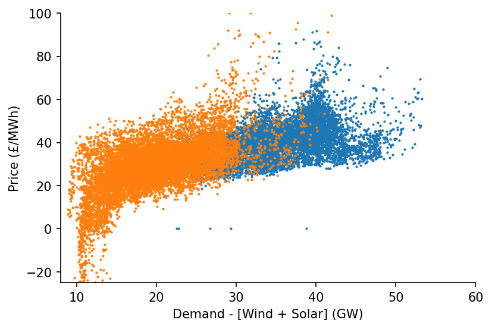

Estimation of Price Surfaces¶

This notebook outlines how to specify different variants the model, then proceeds to fit them.
Imports¶
#exports
import pandas as pd
import numpy as np
import seaborn as sns
import matplotlib.pyplot as plt
import os
import pickle
import FEAutils as hlp
from ipypb import track
from moepy import lowess, eda
User Inputs¶
models_dir = '../data/models'
load_existing_model = True
Loading & Cleaning Data¶
We'll start by loading in ...
%%time
df_EI = eda.load_EI_df('../data/raw/electric_insights.csv')
df_EI.head()
Wall time: 1.69 s
| day_ahead_price | SP | imbalance_price | valueSum | temperature | TCO2_per_h | gCO2_per_kWh | nuclear | biomass | coal | ... | demand | pumped_storage | wind_onshore | wind_offshore | belgian | dutch | french | ireland | northern_ireland | irish | |
|---|---|---|---|---|---|---|---|---|---|---|---|---|---|---|---|---|---|---|---|---|---|
| local_datetime | |||||||||||||||||||||
| 2009-01-01 00:00:00+00:00 | 58.05 | 1 | 74.74 | 74.74 | -0.6 | 21278.0 | 555.0 | 6.973 | 0.0 | 17.650 | ... | 38.329 | -0.404 | NaN | NaN | 0.0 | 0.0 | 1.977 | 0.0 | 0.0 | -0.161 |
| 2009-01-01 00:30:00+00:00 | 56.33 | 2 | 74.89 | 74.89 | -0.6 | 21442.0 | 558.0 | 6.968 | 0.0 | 17.770 | ... | 38.461 | -0.527 | NaN | NaN | 0.0 | 0.0 | 1.977 | 0.0 | 0.0 | -0.160 |
| 2009-01-01 01:00:00+00:00 | 52.98 | 3 | 76.41 | 76.41 | -0.6 | 21614.0 | 569.0 | 6.970 | 0.0 | 18.070 | ... | 37.986 | -1.018 | NaN | NaN | 0.0 | 0.0 | 1.977 | 0.0 | 0.0 | -0.160 |
| 2009-01-01 01:30:00+00:00 | 50.39 | 4 | 37.73 | 37.73 | -0.6 | 21320.0 | 578.0 | 6.969 | 0.0 | 18.022 | ... | 36.864 | -1.269 | NaN | NaN | 0.0 | 0.0 | 1.746 | 0.0 | 0.0 | -0.160 |
| 2009-01-01 02:00:00+00:00 | 48.70 | 5 | 59.00 | 59.00 | -0.6 | 21160.0 | 585.0 | 6.960 | 0.0 | 17.998 | ... | 36.180 | -1.566 | NaN | NaN | 0.0 | 0.0 | 1.730 | 0.0 | 0.0 | -0.160 |
5 rows × 24 columns
... and cleaning the GB data
df_EI_model = df_EI[['day_ahead_price', 'demand', 'solar', 'wind']].dropna()
s_demand = df_EI_model['demand']
s_price = df_EI_model['day_ahead_price']
s_dispatchable = df_EI_model['demand'] - df_EI_model[['solar', 'wind']].sum(axis=1)
# Plotting
fig, ax = plt.subplots(dpi=150)
ax.scatter(s_dispatchable['2010-09':'2011-03'], s_price['2010-09':'2011-03'], s=1)
ax.scatter(s_dispatchable['2020-03':'2020-09'], s_price['2020-03':'2020-09'], s=1)
hlp.hide_spines(ax)
ax.set_xlim(8, 60)
ax.set_ylim(-25, 100)
ax.set_xlabel('Demand - [Wind + Solar] (MW)')
ax.set_ylabel('Price (£/MWh)')
Text(0, 0.5, 'Price (£/MWh)')

As well as the DE data
df_DE = eda.load_DE_df('../data/raw/energy_charts.csv', '../data/raw/ENTSOE_DE_price.csv')
df_DE_model = df_DE[['price', 'demand', 'Solar', 'Wind']].dropna()
s_DE_demand = df_DE_model['demand']
s_DE_price = df_DE_model['price']
s_DE_dispatchable = df_DE_model['demand'] - df_DE_model[['Solar', 'Wind']].sum(axis=1)
# Plotting
fig, ax = plt.subplots(dpi=150)
ax.scatter(s_DE_dispatchable['2015-09':'2016-03'], s_DE_price['2015-09':'2016-03'], s=1)
ax.scatter(s_DE_dispatchable['2020-03':'2020-09'], s_DE_price['2020-03':'2020-09'], s=1)
hlp.hide_spines(ax)
ax.set_xlim(8, 75)
ax.set_ylim(-25, 100)
ax.set_xlabel('Demand - [Wind + Solar] (MW)')
ax.set_ylabel('Price (£/MWh)')
Text(0, 0.5, 'Price (£/MWh)')

Results Wrapper¶
We'll start defining each of the price models that we'll fit, using the PicklableFunction class to ensure that all of our models can be saved for later use.
#exports
import copy
import types
import marshal
class PicklableFunction:
"""Provides a wrapper to ensure functions can be pickled"""
def __init__(self, fun):
self._fun = fun
def __call__(self, *args, **kwargs):
return self._fun(*args, **kwargs)
def __getstate__(self):
try:
return pickle.dumps(self._fun)
except Exception:
return marshal.dumps((self._fun.__code__, self._fun.__name__))
def __setstate__(self, state):
try:
self._fun = pickle.loads(state)
except Exception:
code, name = marshal.loads(state)
self._fun = types.FunctionType(code, {}, name)
return
def get_fit_kwarg_sets(qs=np.linspace(0.1, 0.9, 9)):
"""Helper to generate kwargs for the `fit` method of `Lowess`"""
fit_kwarg_sets = [
# quantile lowess
{
'name': f'p{int(q*100)}',
'lowess_kwargs': {'reg_func': PicklableFunction(lowess.calc_quant_reg_betas)},
'q': q,
}
for q in qs
# standard lowess
] + [{'name': 'average'}]
return fit_kwarg_sets
model_definitions = {
'DAM_price_GB': {
'dt_idx': s_dispatchable.index,
'x': s_dispatchable.values,
'y': s_price.values,
'reg_dates_start': '2009-01-01',
'reg_dates_end': '2021-01-01',
'reg_dates_freq': '13W', # 13
'frac': 0.3,
'num_fits': 31, # 31
'dates_smoothing_value': 26, # 26
'dates_smoothing_units': 'W',
'fit_kwarg_sets': get_fit_kwarg_sets(qs=[0.16, 0.5, 0.84])
},
'DAM_price_demand_GB': {
'dt_idx': s_demand.index,
'x': s_demand.values,
'y': s_price.values,
'reg_dates_start': '2009-01-01',
'reg_dates_end': '2021-01-01',
'reg_dates_freq': '13W', # 13
'frac': 0.3,
'num_fits': 31, # 31
'dates_smoothing_value': 26, # 26
'dates_smoothing_units': 'W',
'fit_kwarg_sets': get_fit_kwarg_sets(qs=[0.5])
},
'DAM_price_DE': {
'dt_idx': s_DE_dispatchable.index,
'x': s_DE_dispatchable.values,
'y': s_DE_price.values,
'reg_dates_start': '2015-01-04',
'reg_dates_end': '2021-01-01',
'reg_dates_freq': '13W', # 13
'frac': 0.3,
'num_fits': 31, # 31
'dates_smoothing_value': 26, # 26
'dates_smoothing_units': 'W',
'fit_kwarg_sets': get_fit_kwarg_sets(qs=[0.16, 0.5, 0.84])
},
'DAM_price_demand_DE': {
'dt_idx': s_DE_dispatchable.index,
'x': s_DE_demand.values,
'y': s_DE_price.values,
'reg_dates_start': '2015-01-04',
'reg_dates_end': '2021-01-01',
'reg_dates_freq': '13W', # 13
'frac': 0.3,
'num_fits': 31, # 31
'dates_smoothing_value': 26, # 26
'dates_smoothing_units': 'W',
'fit_kwarg_sets': get_fit_kwarg_sets(qs=[0.5])
}
}
We'll now take these model definitions to fit and save them
#exports
def fit_models(model_definitions, models_dir):
"""Fits LOWESS variants using the specified model definitions"""
for model_parent_name, model_spec in model_definitions.items():
for fit_kwarg_set in track(model_spec['fit_kwarg_sets'], label=model_parent_name):
run_name = fit_kwarg_set.pop('name')
model_name = f'{model_parent_name}_{run_name}'
if f'{model_name}.pkl' not in os.listdir(models_dir):
smooth_dates = lowess.SmoothDates()
reg_dates = pd.date_range(
model_spec['reg_dates_start'],
model_spec['reg_dates_end'],
freq=model_spec['reg_dates_freq']
)
smooth_dates.fit(
model_spec['x'],
model_spec['y'],
dt_idx=model_spec['dt_idx'],
reg_dates=reg_dates,
frac=model_spec['frac'],
threshold_value=model_spec['dates_smoothing_value'],
threshold_units=model_spec['dates_smoothing_units'],
num_fits=model_spec['num_fits'],
**fit_kwarg_set
)
model_fp = f'{models_dir}/{model_name}.pkl'
pickle.dump(smooth_dates, open(model_fp, 'wb'))
del smooth_dates
fit_models(model_definitions, models_dir)
100%
4/4
[00:00<00:00, 0.00s/it]
100%
2/2
[00:00<00:00, 0.00s/it]
100%
4/4
[00:00<00:00, 0.00s/it]
100%
2/2
[00:00<00:00, 0.00s/it]
We'll load one of the models in
%%time
if load_existing_model == True:
smooth_dates = pickle.load(open(f'{models_dir}/DAM_price_GB_p50.pkl', 'rb'))
else:
lowess_kwargs = {}
reg_dates = pd.date_range('2009-01-01', '2021-01-01', freq='13W')
smooth_dates = lowess.SmoothDates()
smooth_dates.fit(s_dispatchable.values, s_price.values, dt_idx=s_dispatchable.index,
reg_dates=reg_dates, frac=0.3, num_fits=31, threshold_value=26, lowess_kwargs=lowess_kwargs)
Wall time: 2.7 s
And create a prediction surface using it
%%time
x_pred = np.linspace(8, 60, 521)
dt_pred = pd.date_range('2009-01-01', '2021-01-01', freq='1W')
df_pred = smooth_dates.predict(x_pred=x_pred, dt_pred=dt_pred)
df_pred.head()
Wall time: 346 ms
| 2009-01-04 | 2009-01-11 | 2009-01-18 | 2009-01-25 | 2009-02-01 | 2009-02-08 | 2009-02-15 | 2009-02-22 | 2009-03-01 | 2009-03-08 | ... | 2020-10-25 | 2020-11-01 | 2020-11-08 | 2020-11-15 | 2020-11-22 | 2020-11-29 | 2020-12-06 | 2020-12-13 | 2020-12-20 | 2020-12-27 | |
|---|---|---|---|---|---|---|---|---|---|---|---|---|---|---|---|---|---|---|---|---|---|
| 8.0 | -7.660008 | -7.789268 | -7.910814 | -8.025717 | -8.134805 | -8.238751 | -8.338129 | -8.433449 | -8.525193 | -8.613820 | ... | 10.235374 | 10.292018 | 10.347611 | 10.402138 | 10.455693 | 10.508530 | 10.561129 | 10.614270 | 10.669140 | 10.727071 |
| 8.1 | -7.467721 | -7.596370 | -7.717343 | -7.831705 | -7.940282 | -8.043744 | -8.142661 | -8.237542 | -8.328865 | -8.417088 | ... | 10.442911 | 10.499384 | 10.554824 | 10.609219 | 10.662661 | 10.715403 | 10.767921 | 10.820990 | 10.875787 | 10.933636 |
| 8.2 | -7.275607 | -7.403641 | -7.524036 | -7.637854 | -7.745917 | -7.848890 | -7.947342 | -8.041780 | -8.132678 | -8.220493 | ... | 10.650337 | 10.706638 | 10.761927 | 10.816190 | 10.869521 | 10.922169 | 10.974607 | 11.027605 | 11.082331 | 11.140099 |
| 8.3 | -7.083662 | -7.211075 | -7.330889 | -7.444158 | -7.551701 | -7.654183 | -7.752166 | -7.846157 | -7.936627 | -8.024030 | ... | 10.857636 | 10.913767 | 10.968906 | 11.023039 | 11.076259 | 11.128814 | 11.181173 | 11.234100 | 11.288756 | 11.346444 |
| 8.4 | -6.891877 | -7.018666 | -7.137894 | -7.250611 | -7.357631 | -7.459617 | -7.557128 | -7.650668 | -7.740706 | -7.827694 | ... | 11.064795 | 11.120757 | 11.175747 | 11.229751 | 11.282861 | 11.335324 | 11.387606 | 11.440464 | 11.495050 | 11.552659 |
5 rows × 626 columns